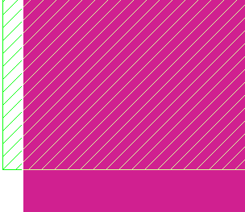

To display layer
data, the layout viewer draws geometries one layer at a time. When
one geometry overlaps another on a different layer, the default
mode is to overwrite the colors. You can change the default mode
to blend the colors of the overlapping layers.
Procedure
- To change the default behavior
and have overlapping shapes on different layers display as a new
color, choose .
The colors where the two shapes
on different layers overlap are ORed together. For example, a blue shape intersecting
a yellow shape
results in a green area,
where the shapes overlap. The overlap color is usually a lighter
color as ORing colors tends to saturate the red, green, and blue color
values. A white shape, which already has 100% red, green and blue
colors, always has a white overlap. The background color does not
affect how the colors are merged, although there is a small performance
penalty for drawing with light backgrounds (Figure 1).
Figure 1. Blended Colors in
Overlapping Shapes
- To change the behavior and
overwrite the colors of overlapping shapes on different layers,
choose .